El meu client no té pressa.

Quan siguis a París — recorda una cosa. Quan no t'entenguin, no és perquè tu t'equivoquis. És perquè ells són quadrats.
视觉笔记 Notes Visuals
① 一头牛的十一张脸
Onze Cares d'un Brau
1945年圣诞节，毕加索用同一块石版画了一头牛——然后反复擦掉、重画。十一次。从肌肉、阴影、皮毛，到只剩三根线。这不是简化，是抵达。就像高迪在咖啡馆说的：「你在跟眼睛抢。」
十一次覆盖重画，从写实到只剩三根线条。以下为关键阶段：
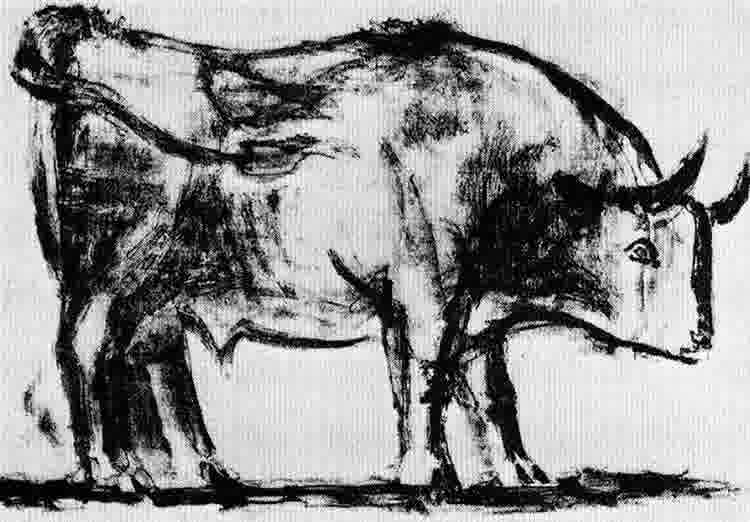
1 · 写实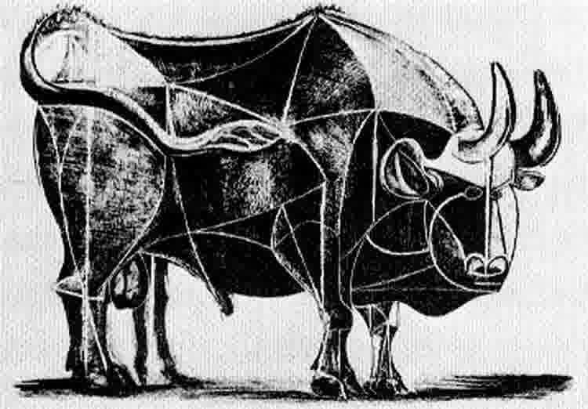
4 · 解构开始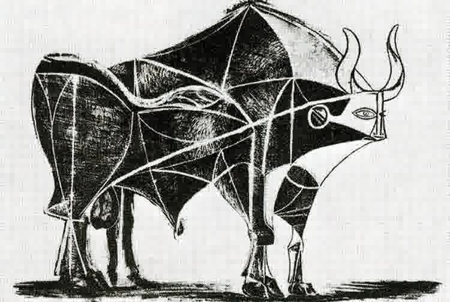
5 · 剥离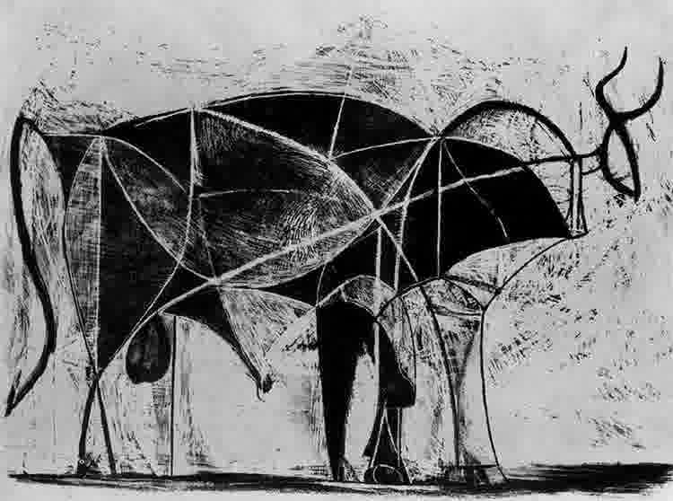
6 · 线条浮现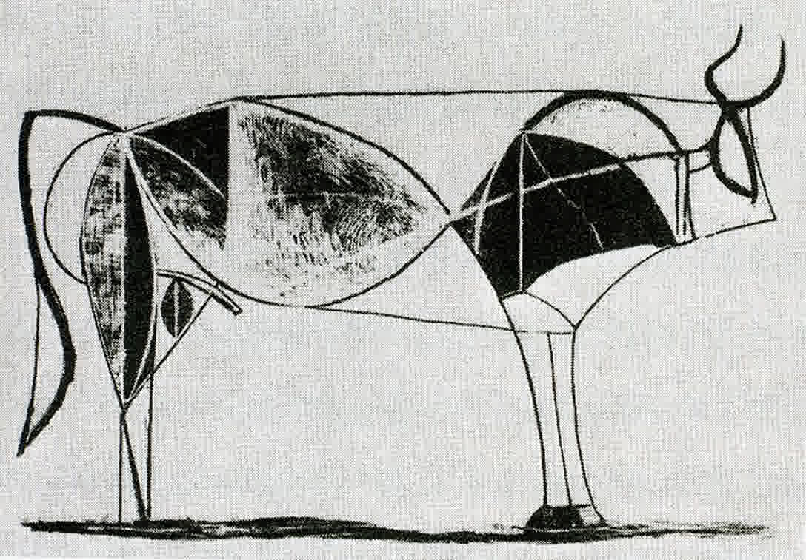
7 · 继续剥离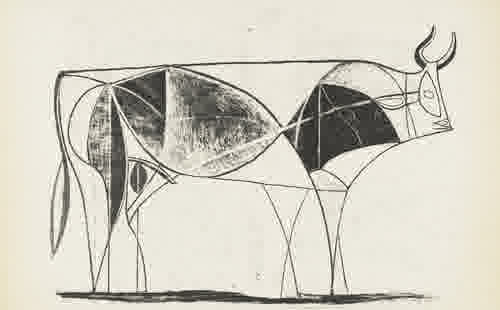
8 · 化繁为简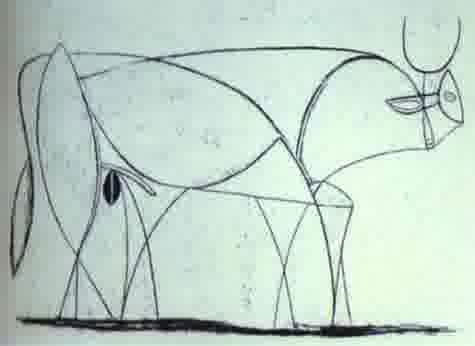
9 · 逼近本质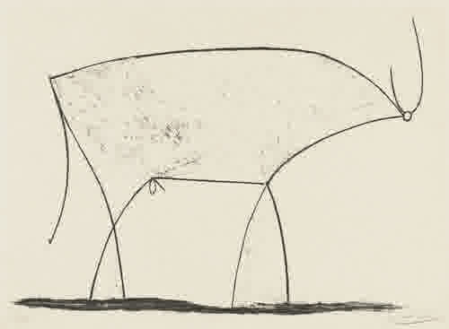
11 · 抵达
Le Taureau · 石版画 · 1945年12月–1946年1月
十一个版本，从 Plate 1 到 Plate 11。颜料一层层减去，公牛的本质一层层显露。
② 三幅画，一生
Tres Quadres, Una Vida
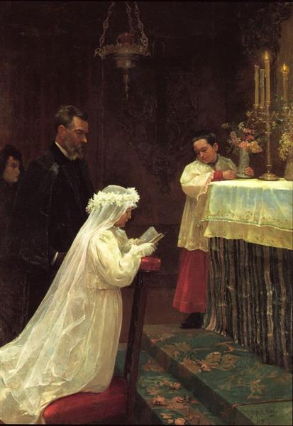
《第一次圣餐》1896
La Primera Comunió
十五岁。四只猫咖啡馆还没在他的生命里打开那扇门，但画笔已经比大多数成年人更诚实。
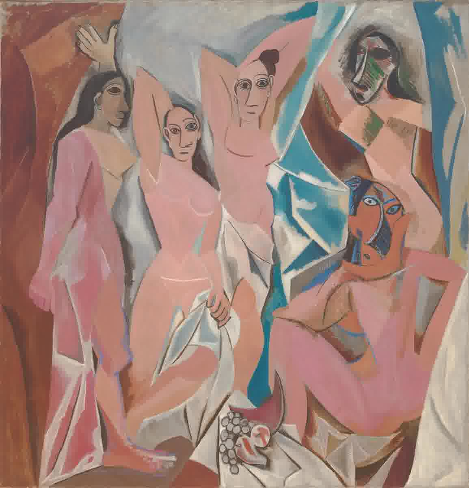
《亚威农少女》1907
Les Demoiselles d'Avignon
高迪在咖啡馆说「你用颜料割开空间」。这张画就是那一刀——五个女人的身体被切成几何切面，西方艺术从此不再一样。
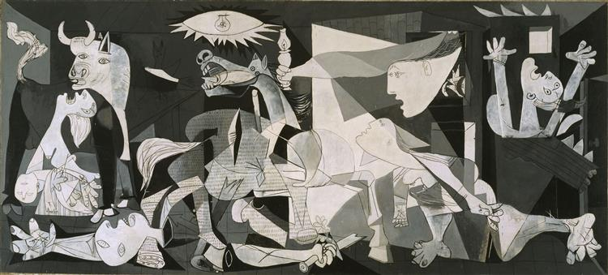
《格尔尼卡》1937
Guernica
高迪没能活着看见这幅画——它证明了抽象不是逃离现实，是直抵现实最锋利的方式。
③ 一根线
Una Línia
「直线属于人类，曲线属于上帝。」
La línia recta pertany a l'home. La corba, a Déu.
— Antoni Gaudí
高迪的柱子是树——树干分叉、枝条承重、没有一根直线。圣家堂不是"建"起来的，是"长"出来的。
「我在画我能看到的东西——不是他们看到的那些。」
Dibuixo el que jo veig. No el que veuen ells.
— Pablo Picasso
公牛系列的最后一幅：一根线就是整头牛。和上帝签名的曲线不同，这是人类意志的直线——但同样到达了真实。
一棵树撑起教堂的穹顶。一根线画出公牛的全部。
两者都不需要方块。